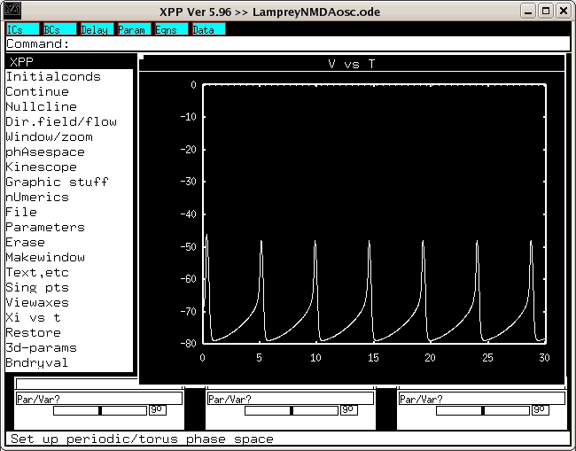

This is the readme for the model associated with the paper Huss M, Wang D, Trane C, Wikstrom M, Hellgren Kotaleski J (2008) An experimentally constrained computational model of NMDA oscillations in lamprey CPG neurons. J Comput Neurosci 25:108-21 This ode file was supplied by Mikael Huss. Using experiments in conjunction with this simplified model, we sought to understand the basic mechanisms behind NMDA-induced oscillations in lamprey locomotor neurons, specifically (a) how the oscillation frequency depends on NMDA concentration and why, and (b) what the minimal number of components for generating NMDA oscillations is (in vitro and in the model). The model is only for NMDA oscillations! No action potential etc. are modelled. While submitting this model, I discovered a typo and some missing information in the paper (Huss et al. J Comput Neurosci (2008) 25:108-121). The gcav parameter value is given as 0.0005 in the paper, but the value used was in fact 0.005 (this has been fixed in the model file here). Also, the captions for Fig 5c-d neglect to mention that the gnmda value used for those was gnmda=0.005. To reproduce Fig. 5A, set gk=0 and gcav=0, and set gnmda (and gkca, if applicable) to the values given in the plot. To reproduce Fig. 5B, simply set gnmda to the given values. To reproduce Fig. 5C, keep gnmda=0.005 and (upper part) set gkca to the given values or (lower part) set gk=0. To reproduce Fig. 5D, keep gnmda=0.005 and set (eleak, ek)=(-70,-80), (-65,-75), or (-60,-70). Example usage: unix/linux: ----------- Download and extract the archive. cd to the expanded folder and type xppaut LampreyNMDAosc.ode (or use equivalent in other operating system) then select Initialconds -> Go. You should get a figure similar to fig 5 b) bottom trace: 